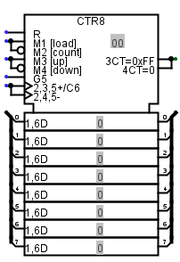
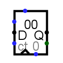

计数器
计数器
| 库： | 存储器 |
 |
| 引入版本： | 2.3.0 | |
| 外观： |
 |
行为
计数器保存一个值，并通过输出端 Q 输出。该值根据 Load、Enable(ct) 和 Up Down (UD) 输入，在时钟触发（南侧边缘的三角形）时更新。
| Load | Enable(ct) | Up Down (UD) | 触发动作 |
|---|---|---|---|
| 0 或 Z | 0 | X | 计数器保持不变。 |
| 0 或 Z | 1 或 Z | 1 或 Z | 计数器递增。 |
| 0 或 Z | 1 或 Z | 0 | 计数器递减。 |
| 1 | X | X | 计数器加载 D 输入端上的值。 |
复位 输入（南侧边缘，标记为 R 或 0）会异步地将计数器的值复位为 0。只要 复位 输入为 1，计数器的值就固定为 0，不受时钟或其他输入影响。
引脚
以下引脚描述适用于经典和Logisim-evolution外观。请注意，Logisim-evolution 外观使用标准的 IEC/IEEE 符号表示法。
- 东侧边缘，标记为 Q（输出，位宽与
数据位宽
属性一致） - 输出计数器当前存储的值。
- 东侧边缘，下方引脚（输出，位宽为 1）
- 进位（显示为 3CT=MAX / 4CT=0）：当计数器处于最大值且正在递增，或处于 0 且正在递减时，此输出为 1。Load 和 Enable(ct) 输入不直接影响此输出。
- 西侧边缘，顶部引脚（输入，位宽为 1）
- 加载（显示为 M1）：当此输入为 1 时，计数器将在下一个时钟触发时加载 D 输入端上的值，不受 Enable(ct) 输入影响。
- 西侧边缘，中间引脚，标记为 D（输入，位宽与
数据位宽
属性一致） - 数据：当 Load 有效时，要加载的值来自该输入端。
- 西侧边缘，下方引脚，标记为 ct（输入，位宽为 1）
- 使能（显示为 G5）：当此引脚为 1 或未连接时，只要 Load 输入为 0，计数器就会在时钟触发时递增或递减。
- 北侧边缘，标记为 UD（输入，位宽为 1）
- 计数方向（显示为 M3/M4）：当为 1 或 Z 时，计数器递增；当为 0 时，计数器递减。当 Load 为 0 且 ct 为 1 时，此输入决定计数方向。
- 南侧边缘，以三角形标识（输入，位宽为 1）
-
时钟（显示为 C6 / 2,3,5+ / 2,4,5-）：按
触发方式
属性指定的方式触发。在 Logisim-evolution 符号中，多重标记反映了内部对计数/加载模式的依赖。 - 南侧边缘，标记为 0 或 R（输入，位宽为 1）
- 复位（显示为 R）：当此引脚为 1 时，计数器异步复位为 0。
属性
当组件被选中或正在放置时，Alt-0 到 Alt-9 可修改其数据位宽
属性。
- 数据位宽
- 组件输出值的位宽。
- 最大值
- 最大值，计数器达到此值时将置位其进位输出。
- 溢出时行为
- 当计数器试图递增超过最大值或递减低于 0 时的行为。可能的操作：回绕、保持当前值、继续计数或加载下一个值。
- 触发方式
- 配置时钟输入的解释方式（上升沿或下降沿）。
- 标签 / 标签字体
- 与组件标签关联的文本和字体。
手形工具行为
单击计数器会使其获得键盘焦点，随后输入十六进制数字即可修改计数器中存储的值。
文本工具行为
可用于编辑与组件关联的标签。